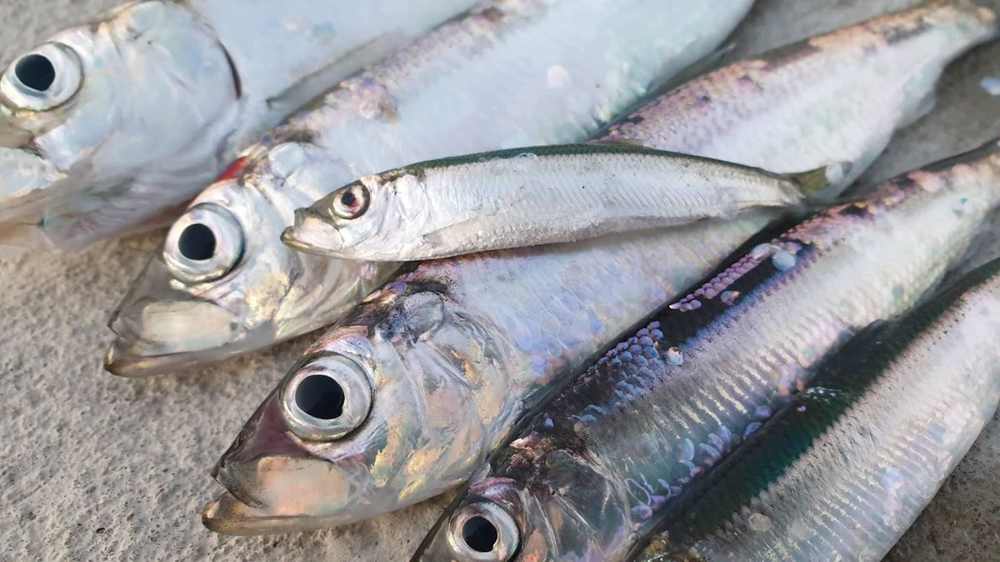
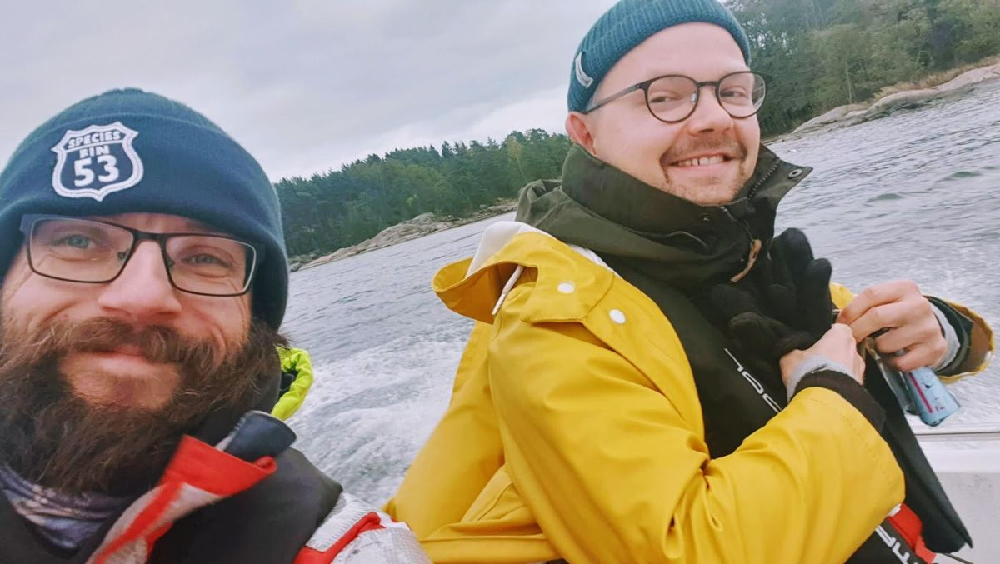
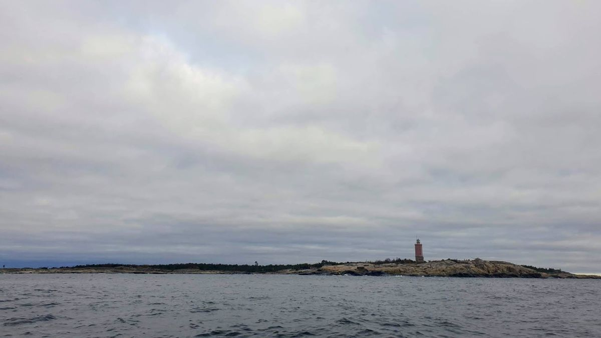

Blogitekstit · Marraskuu 2020
Lokakuu - uudet suunnitelmat

"Ja kuukin tanssii kasvoillasi kylmää tanssiaan
Lähtisitkö todellakin kanssani tänä yönä taivaan ostamaan
Minä olen valmis, jos tahdot niin
Minulla on ikävä lokakuu
Ikäväni sinuun aina lokakuun tullen täysikuusta heijastuu"
Hausmylly Ikävä lokakuu kappaleen sanoja lainaten. Taas syksy tää mut yllättää... Syyskuun loppurutistus toi Juuson kärkisijalle rinnalleni ja hänen saama kilohaili pisti suunnitelmia selville lokakuulle. Kuukauden ensimmäinen kalareissu suuntautui kuitenkin Porkkalaan Olli-Pekka Turusen kanssa.
Teistijahti liukkailla rantakallioilla ei muutaman tunnin yrittämisellä tuonnut tulosta, eikä havaittu pikkutuulenkalakaan suostunut yhteistyöhön joten litkailin kilohailia silakoiden joukosta. Huonolla menestyksellä, Olli-Pekka sai kyllä erästä kotiin vietäväksi muutaman kilon verran.
Juuso ja Miika kävivät Hangossa koittamassa piikkisimppua, saalis jäi laihaksi tosin tilastoja koristi 10,7 cm mustatokko joka lähenteli Suomen ennätysmittoja.
Kilohailijahti jatkui tiimikaverini ja hyvän ystäväni Mikon kyydissä Espoonlahden alueella. Nihkeästi silakkaparvia tai muitakaan parviä ei lahdella näkynyt, mutta lopulta lähin paikka ennen rantaan paluuta antoi silakkaa reilumpia määriä. Silakkaa, niimpä.


Seuraava kilohaili yritys suuntautui Hankoon. Mukaan lähti Longinojan kautta tutuksi tullut Teppo Säkkinen ja veneen kippariksi paikallinen kalastusopas Emil Sundström.
Kuten arvata saattaa, oli tämäkin reissu munat pataan keikka. Keikka oli susi, mutta keskustelut Emilin ja Tepon kanssa eivät. Oikeastaan viimeinenkin pettymyksen karvas tunne karisi kun otimme suunnan kohti lähtö satamaa. Emil kertoi, että tuleva sunnuntai voisi vapautua ja voisimme olla koko päivän vesillä.


Muiden kärkijätkien osalla oli hiljaista. Paljoa ei viestejä vaihdettu, mitä nyt Miika lähetteli kuvia streoidisilakoista mökiltään.
Tuli sunnuntai, mukana pelkääjänpaikalla hyvä ystäväni Timi. Matka halki sumuisen Hankoniemen sujui leppoisasti tulevan reissun pelikirjaa miettiessä. Kahteen virveliin silakkalitkata ja kolmanteen vertsujigiviritys turskan jigaamiseksi. Minun ykköskentän hyökkääjät olivat selvillä.
Parkkipaikalle päästyämme Hangon vedet tunteva Marko tuli moikkaamaan. Tämä taimentenkalastajien kärkikaartiin kuuluva herra oli jälleen vesille lähdössä. Toivotammekin toisillemme kireitä ja siirryimme omille laitureillemme.


Upea plägä meri toivotti meidät tervetulleiksi ja lähdimme Vaeltajalla kohti aavaa ulappaa. Turskakivet, hylky, saarten kupeet, syvänteet, matalikot, kapeikot ja kaikki muut paikat antoivat vain silakoita, kalojen koko oli oikeaa, mutta laji väärä.
Viimeiset kaksi kuukautta, verkkokaupassa maailman kiireisimmät ajat. Parit synttärit, yksi parisuhdeviikonloppu ja Longinojan taimenten kuduntarkkailun loppukliimaksi.
Mitä tuo marraskuu mukanaan lajikalastusrintamalla, vai tuoko mitään?
Seuraa ennätyksen etenemistä
Pidän kirjaa lajilistasta ja tarkemmasta retkidatasta Google -taulukossa, joka löytyy jokaisesta ennätysyrityksen postauksesta.
Tästä linkistä taulukko avautuu uuteen ikkunaan.
Seurantatilanne löytyy myös blogini oikeasta yläreunasta.
Vuoden aikana ennätysyrityksessä kulkee mukaan myös tämä kalataitelija-graaffikko Sakke Yrjölän suunnittelema SPECIES FIN 53 -merkki.
Paitakulmassa painatin pipoon ja lippikseen saman merkin. Tavoitteeni on saada aikaiseksi 53 saaliskuvaa tekstin alussa tekemääni taulukkoon joissa kaikissa kuvissa näkyisi tuo kyseinen tunnus.
Paitakulma on Suomalainen perheyritys, joka haluaa panostaa laatuun ja asiakastyytyväisyyteen. Tutustu yrityksen palveluihin tästä.